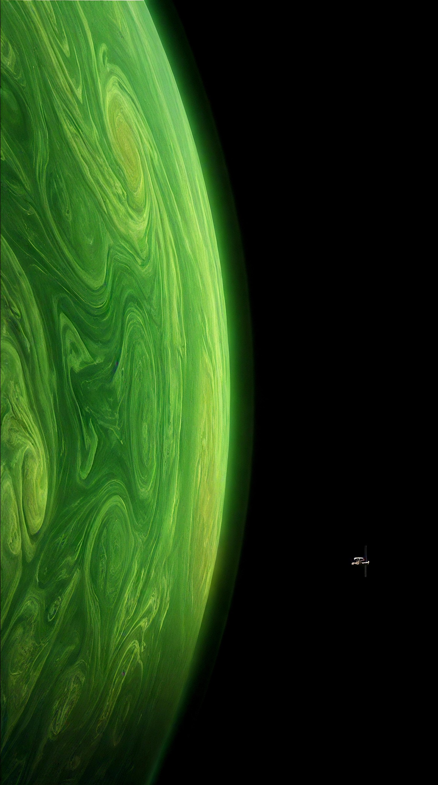
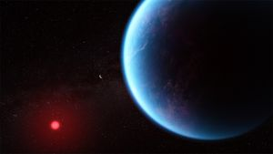
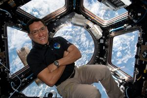
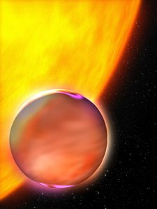
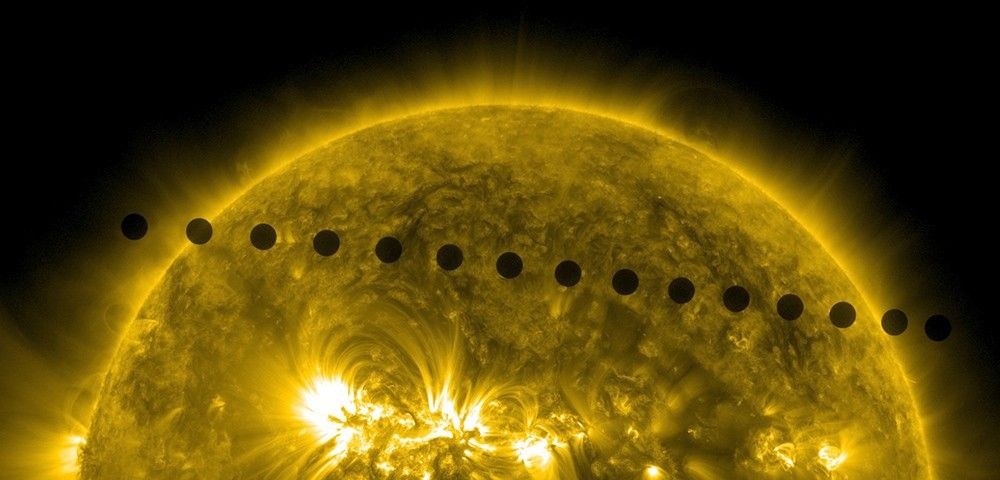
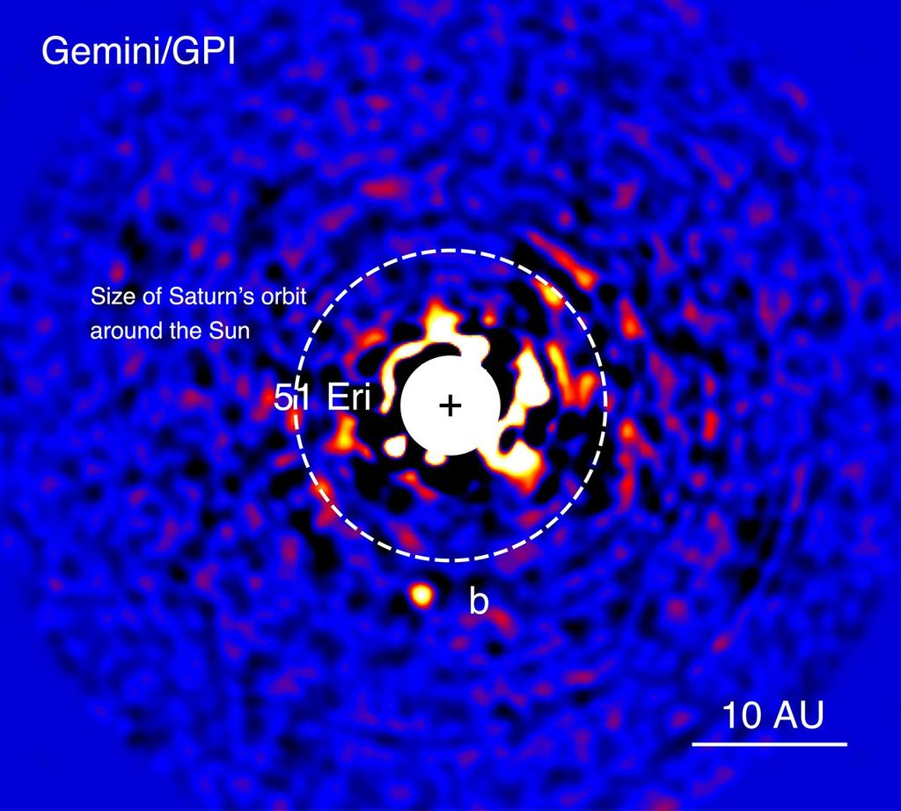
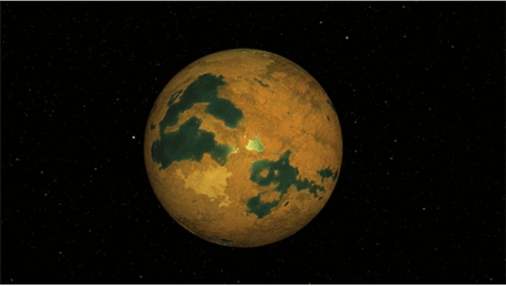
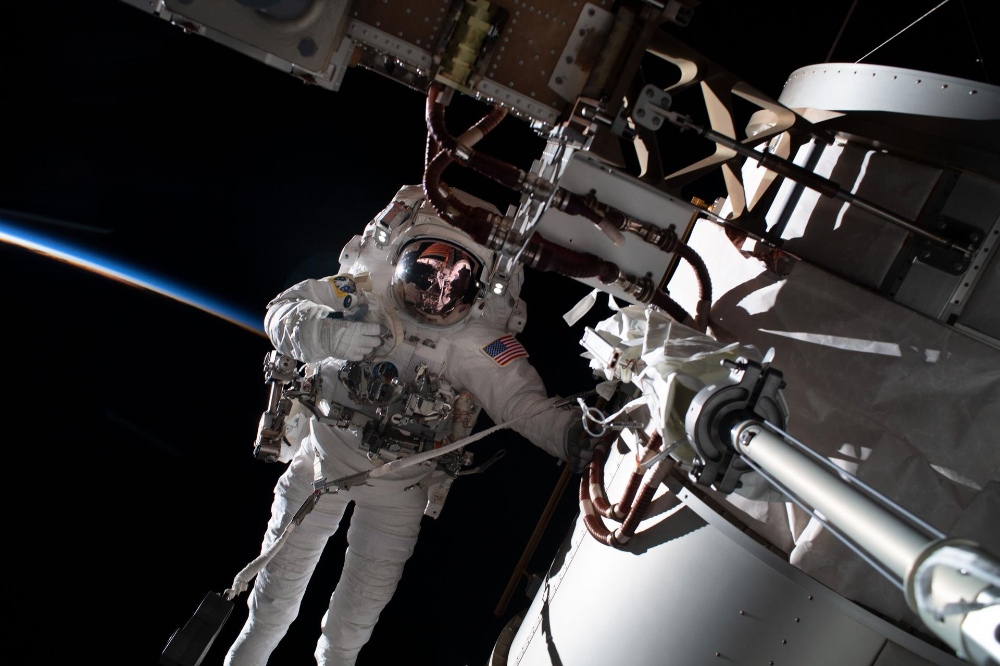
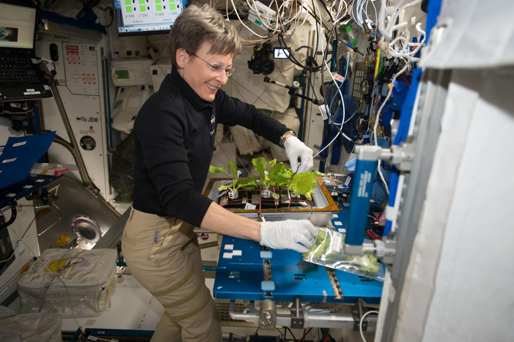

ARTICLE
The Science Behind
'Project Hail Mary'
The Science behind Andy Weir's Sci-fi Book and now Blockbuster Film directed by Phil Lord & Christopher Miller
ROCKY HAS ANSWERS. QUESTIONS?

Is Tau Ceti a real star?
And does it actually have a planet around it?

How long can astronauts stay in space?

Is Erid a real planet?
Bad news for Rocky; also for Mr. Spock
How do we communicate with spacecraft so far away?
Does the Science Track?
In the science-fiction novel and movie "Project Hail Mary," the story revolves around the rigors of an astronaut working and surviving during a yearslong mission, the power of deep-space communications, the search for life beyond Earth, and nearby star systems that actually exist — Tau Ceti and 40 Eridani A.

Artist's concept of the exoplanet Tau Ceti e, which orbits the star Tau Ceti every 168 days. Credit: NASA/JPL-Caltech
NASA

Teeming With Life


In "Project Hail Mary," a character mentions that his spacecraft will "await instructions from the Deep Space Network," and that they could be as far away as the orbit of Saturn. In real life, the DSN routinely sends and receives messages to spacecraft at the Moon, the outer planets, and even the farthest spacecraft in history, Voyager 1, which is currently about 16 billion miles beyond Saturn (26 billion kilometers).
The DSN never stops talking to spacecraft out there. See for yourself, with 'DSN Now.' →
DEEP DSN
Long-Distance Call and Response: Watch How the DSN Works
When scientists and engineers want to send commands to a spacecraft in deep space, they turn to the Deep Space Network. NASA's array of giant radio antennas around the globe, making it possible to communicate with spacecraft at the Moon and far beyond.
Learn More About the Deep Space Network →THE SEARCH FOR LIFE
Astrobiology
Are we alone? Is there life anywhere else in the universe? NASA has been striving to answer these big questions — maybe the biggest — since its first exobiology research in 1959. Ever since, the agency has been investigating life on many levels: how it began, how it evolved here on Earth, and where it might exist elsewhere.
Learn more about NASA's search for life in the cosmos →The Sun
The star in our backyard; it may appear like an unchanging source of light and heat in the sky. But the Sun is a dynamic star, constantly changing and sending energy out into space — energy necessary for life on Earth. And it's been doing that for about 4.6 billion years, with another 5 billion or so in its current state. Learn more about the Sun and how NASA studies it, including the first spacecraft ever to fly through its atmosphere and touch the only star we can study up close.
Learn More About the Sun, Our Neighborhood Star →Venus
Venus is sometimes called Earth's twin, because it's our closest planetary neighbor and is similar in size and structure. But the similarities end pretty quickly. Venus has a surface temperature hotter than Mercury (even though that planet is much closer to the Sun), and its atmosphere is a heat-trapping blanket of carbon dioxide that creates air pressure 93 times greater on the surface than at sea level on Earth, with sulfuric-acid clouds swirling at 200 mph.
The carbon dioxide so attractive to fictional "astrophage" — the microbial menace in "Project Hail Mary" — has led to a runaway greenhouse effect on a planet that scientists believe may have once been habitable. Its erstwhile twin has surface temperatures reaching 872 degrees Fahrenheit (467 degrees Celsius). The story is different higher up, though — about 30 miles above the surface of Venus (about 50 kilometers), temperatures range from 86 to 158 degrees Fahrenheit (30 to 70 Celsius), with atmospheric pressure similar to what we find on Earth's surface.
Exoplanets — Other Stars, Other Worlds
Exoplanets are planets outside our solar system; for the most part they orbit other stars, the way that Earth, Venus, and the other planets in our solar system orbit the Sun. Scientists have confirmed more than 6,000 exoplanets in our galaxy, out of the billions that we believe exist. Learn more about some of the nearby star systems with newfound celebrity — Tau Ceti and 40 Eridani A.
Tau Ceti
Tau Ceti has long been a popular setting in science fiction, as one of the nearest Sun-like stars. Featured in works by Isaac Asimov, Arthur C. Clarke, Frank Herbert, Robert Heinlein, Ursula K. Le Guin, and Kim Stanley Robinson, the Tau Ceti system even serves as the setting for the 1968 Jane Fonda film, "Barbarella." In "Project Hail Mary" it's the origin of an apocalyptic plague, source of the Earth-saving solution, and perhaps even the ancestral home of one or more characters.
Tau Ceti e
Nicknamed "Adrian" in "Project Hail Mary," this exoplanet was one of four planets announced to be orbiting Tau Ceti in 2017. But new studies released in 2024 and 2025, which performed additional monitoring and analysis of the star, showed that all four signals are likely due to quirks of the data-analysis process, or activity on the surface of Tau Ceti itself, not by any planets around it.
Learn more about the Tau Ceti star system →40 Eridani A
Another popular star in science fiction, 40 Eridani A is home to the planet Vulcan in "Star Trek" and a life-supporting planet in "Dune." The star is actually part of a three-star system, with 40 Eridani B and C; it's also called Keid (from the Arabic word for eggshells) or HD 26965.
40 Eridani A b
The exoplanet called Erid in "Project Hail Mary" — Rocky's home world; it was thought to be a real exoplanet when discovered in 2018, but turned out to be a false positive. At the time, people liked to compare it to Vulcan from Star Trek, because that planet also orbited 40 Eridani A. For "Project Hail Mary" novelist Andy Weir, the exobiology in his story was inspired by the supposed environment of 40 Eridani A b — an extremely high-pressure world where life evolved to "see" using echolocation, to minimize movement and energy expenditure.
Learn more about the 40 Eridani star system →Learn more about Exoplanets, worlds outside our solar system →
NO ERID, QUESTION?
Discovery Alert: Spock's Home Planet Goes 'Poof'
A planet thought to orbit the star 40 Eridani A — host to Mr. Spock's fictional home planet, Vulcan, in the "Star Trek" universe (as well as Rocky's home planet in "Project Hail Mary") — was really a kind of astronomical illusion caused by the pulses and jitters of the star itself, a 2024 study showed.
Read the Story →
Artist's concept shows a full disk of the imagined exoplanet around 40 Eridani A, nicknamed "Vulcan" for the home planet of Mr. Spock of "Star Trek" and Erid, the home planet of Rocky in "Project Hail Mary".
NASA/JPL-Caltech

(Nov. 15, 2022) — NASA astronaut and Expedition 68 Flight Engineer Frank Rubio is pictured during a spacewalk tethered to the International Space Station's starboard truss structure. Behind Rubio, the last rays of an orbital sunset penetrate Earth's thin atmosphere as the space station flew 258 miles above the African nation of Algeria.
NASA

How Do We Talk to Distant Spacecraft?
The Deep Space Network, NASA's worldwide network of enormous radio antennas is communicating with our spacecraft 24/7, including probes headed for the asteroid belt, at Mars, even in interstellar space. Based in Madrid, Spain, in Canberra, Australia, and in the Southern California desert at Goldstone, they're evenly spaced around the globe so every area of the sky is covered.
Learn More About the DSN →Artemis and Human Spaceflight
NASA is returning astronauts to deep space for the first time in 50+ years, with the launch of Artemis II on Wednesday, April 1, carrying four crew members beyond the Moon and back — venturing farther from Earth than humans have ever traveled. Artemis III and IV will follow, orbiting Earth and then returning astronauts to the surface of the Moon. Each mission builds on the ones before it, extending further, for ever-longer periods of time, expanding human exploration from the Moon, to Mars, and beyond.
But space travel is hard on humans — especially extended missions — so NASA has long studied the impacts of spaceflight on astronauts, including the effects of isolation and the ways that microgravity changes the body, as well as ways to develop food that's appetizing as well as nutritious.
In It For the Long Haul
Long-Duration Spaceflights
Among NASA astronauts, Frank Rubio and Peggy Whitson are the current extended-stay record holders. On Sept. 27, 2023, Rubio ended a 371-day mission aboard the International Space Station, the first time a U.S. astronaut spent more than one year in space on a single mission. Whitson holds the cumulative record among U.S. astronauts, with a total of 665 days during three long-duration missions — two of which she was ISS commander. Russian cosmonauts have spent even longer periods in space.
NASA's Artemis II astronaut Christina Koch holds the record for the longest spaceflight by a woman, 328 days, set during her mission to the International Space Station from 2019–2020. Now she holds the distance record, shared with her Artemis II crewmates. On April 6, passing over the far side of the Moon, they reached a maximum distance from Earth at 252,756 miles, setting a new record for human spaceflight.

(2/17/2017) — Aboard the International Space Station, NASA astronaut Peggy Whitson harvests and cleans a type of cabbage, cultivated in orbit, sampled, and then sent to Earth for testing.
Thomas Pesquet